Latest issue: 2026-10-14
TVV RESEARCH SLATE — October 14, 2026 — 11 desks
★ = printed in today's Digest. Unstarred lines are ranked substitutes for the editor.
01 GEO
● ★ CENTCOM said late Oct 13 that US forces helped Gulf partners move more than 19 million barrels of crude through Hormuz on Oct 12, rejecting IRGC control claims. Gulf News CENTCOM barrels · INN CENTCOM rebuttal
● ★ UKMTO Warning 173-26 said a 19,000-tonne container ship was hit by a projectile on an outbound Hormuz transit at 1700 UTC Oct 13, with minor damage. UKMTO Warning 173-26
● JMIC Update 104 on Oct 11 kept Hormuz SEVERE, warning outbound vessels in the southern Omani corridor of projectile risk and AIS-on ships of elevated targeting. JMIC Update 104
● UKMTO logged two verified Hormuz attacks on Oct 13, Warning 170 on a container ship and Warning 171 on a tanker, both struck by unknown projectiles. UKMTO recent incidents · UKMTO Warning 171-26
● ★ Ukraine's Air Force said Russia fired 39 ballistic missiles and 128 drones from 18:00 Oct 13, downing only four missiles and 115 drones by 09:00 Oct 14. Ukrainska Pravda Air Force · Ukrinform overnight attack
● Ukrinform reported five killed and 36 injured in Kyiv after the Oct 13-14 combined Russian strike, with a separate attack on Lutsk killing five on Oct 14. Ukrinform overnight attack
● Peace talks: Zelensky sought new meetings with envoys Witkoff and Kushner on Oct 13; no new meeting since the Oct 9 Miami round has been held. Reuters via StreetInsider · Hromadske Reuters recap
● Reuters reported Oct 12 that Witkoff and Kushner told Kyiv Putin was not ready to negotiate, pitching a deal letting Russia ship over 2.25 million barrels of diesel. Hromadske Reuters recap
● ★ Level 4: the State Department's Yemen Do Not Travel advisory, updated Oct 10, cites terrorism, unrest, kidnapping and landmines, while Saudi Arabia stays Level 3. State Dept Yemen advisory · TheTravel advisory recap
● The US Mission in Saudi Arabia urged Americans on Oct 13 to reconsider travel under its Level 3 advisory, citing Iranian and Houthi missile and drone attacks. Anadolu US Mission alert
● Saudi Civil Defense said debris from two intercepted Houthi cruise missiles injured four people and damaged 15 Riyadh homes on Oct 13. Saudi Gazette Riyadh debris · Arab News interception
● AI-GPR, hold since Sep 30: Iacoviello's monthly AI geopolitical risk index averaged 179.3 for September, up from 151.6 the prior month; no October print yet. AI-GPR monthly data · AI-GPR index page
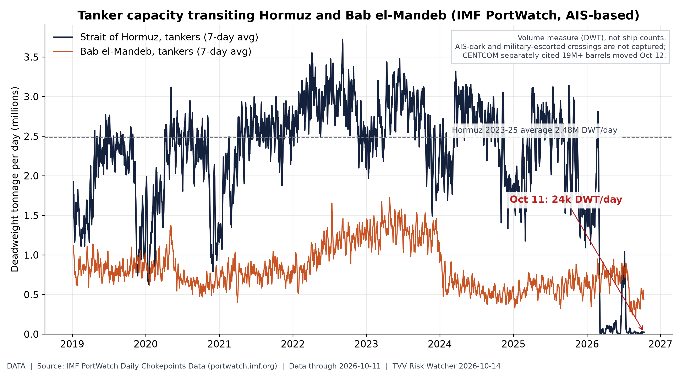 AIS-tracked tanker capacity through Hormuz is about 99% below its 2023-25 norm; escorted, AIS-dark crossings are not in this count. Source: IMF PortWatch chokepoint data | 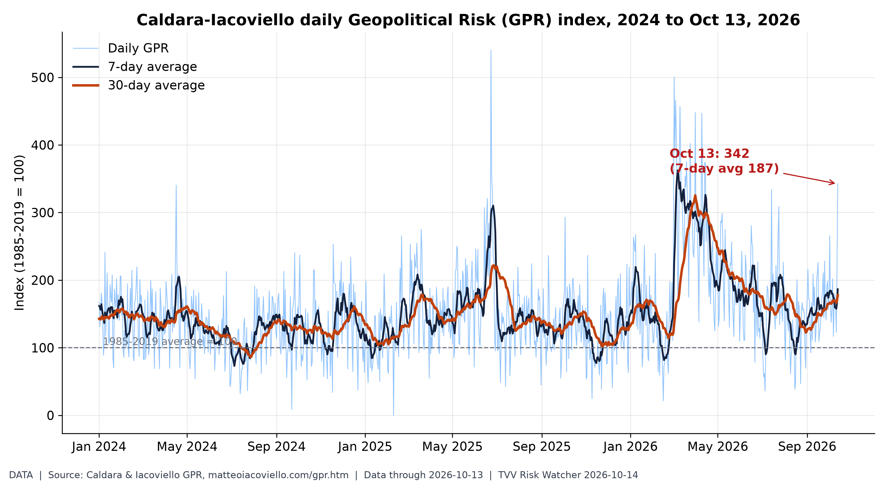 Daily GPR hit 342 on Oct 13, triple its long-run norm, as Hormuz attacks and Russia's missile barrage hit the news. Source: Caldara-Iacoviello GPR index |
02 TERROR
● ★ Israel Police and Shin Bet indicted an 18-year-old Umm el-Fahm man on Oct 13 for an ISIS-pledged plot to attack IDF soldiers in Jerusalem's Old City. Jerusalem Post indictment · INN plot foiled
● IDF troops acting on Shin Bet intelligence arrested four Islamic Jihad members in Qabatiya and Arraba near Jenin on Oct 13, thwarting a planned attack. TPS via IsraelFM
● Punjab Police said Oct 13 they arrested six people in an ISI-backed network plotting attacks on police buildings, seizing a hand grenade and a 9mm pistol. Update Punjab DGP release
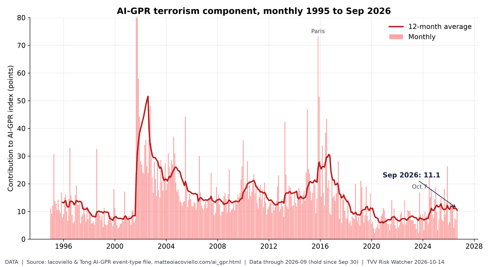
The terrorism component of AI-GPR rose to 11.1 in September from 7.0 in August, near its March 2026 high of 13.3. Source: Iacoviello AI-GPR index
03 QUAKE
● ★ USGS recorded a magnitude 6.8 quake on the central Mid-Atlantic Ridge at 1223 UTC Oct 13, hours after an M6.7 there, both green PAGER alerts. USGS M6.8 event page · USGS M6.7 event page
● USGS logged a magnitude 6.0 quake 126 km south of Kokopo, Papua New Guinea, at 1845 UTC Oct 13, with a green PAGER alert. USGS Kokopo M6.0
● USGS logged a magnitude 5.9 quake in the Fiji region at 1049 UTC Oct 14, the newest M5.5-plus event on its feed this morning. USGS Fiji M5.9
● USGS recorded a magnitude 6.1 aftershock 17 km west of Río Grande, Panama, at 2320 UTC Oct 12, following the Oct 9 M7.7 mainshock. USGS Panama M6.1 · USGS Panama M7.7
● Krakatau: PVMBG kept Anak Krakatau at Level III Siaga on Oct 13, with crater plumes reaching 100 meters and a 5-km exclusion radius. Kompas Anak Krakatau
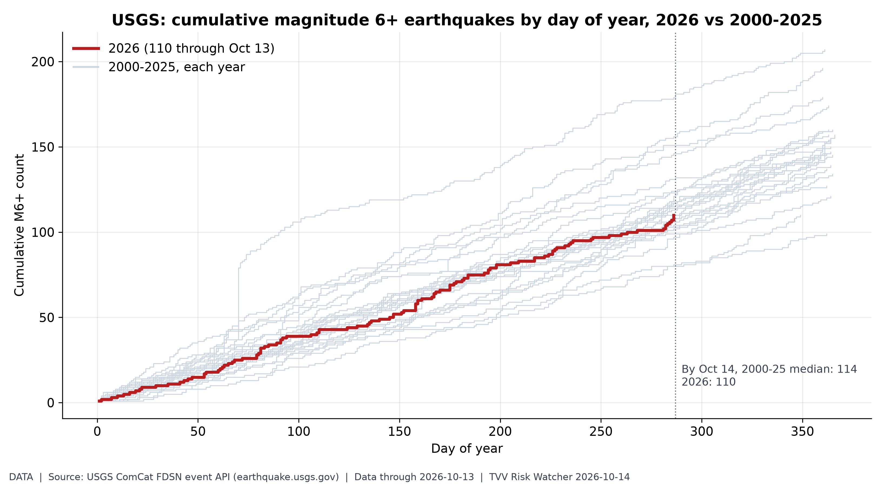
2026 has 110 M6+ quakes by Oct 13 vs a 2000-25 median of 114: a normal pace, so the risk is where they strike, not how often. Source: USGS earthquake catalog
04 SPACE
● ★ NOAA SWPC's 1230 UTC Oct 14 forecast expects peak Kp 3.67 through Oct 16, below storm levels, after a quiet 24 hours peaking at Kp 3. SWPC 3-day forecast · SWPC planetary K-index
● SWPC gave a 20% daily chance of R1-R2 radio blackouts through Oct 16, citing flare potential from growing region AR 4551, and 5% for S1 radiation storms. SWPC 3-day forecast
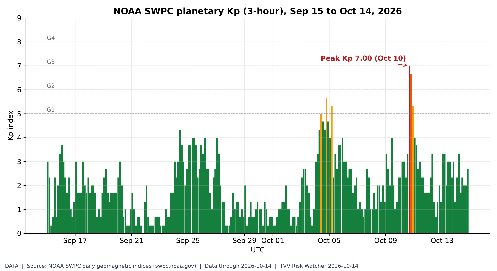
Kp peaked at 7.00 on Oct 10, a strong storm; Oct 14 has stayed below Kp 4 so far, in line with SWPC's Kp 3.67 outlook. Source: NOAA SWPC planetary K-index
05 INFRA
● ★ Isaias shut-ins fell to 329,059 barrels a day, 16.13% of Gulf oil output, plus 355 MMcf/d of gas, as of 11 a.m. CDT Oct 13, MMA said. BSEE/MMA Isaias update
● Zelensky said Russia's Oct 13-14 strike damaged 26 energy sites and four oil and gas facilities, leaving at least 600,000 consumers without power. Ukrainska Pravda energy damage
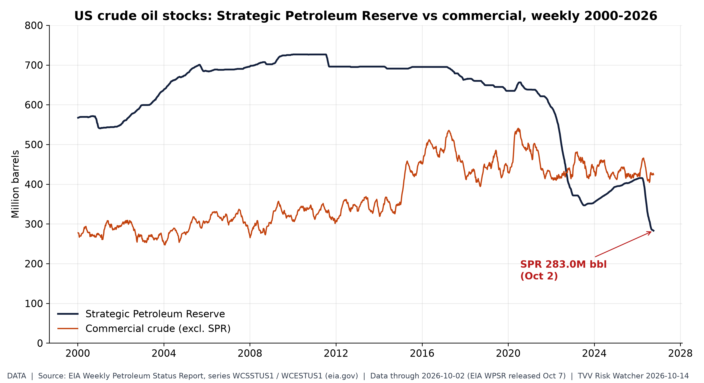
The SPR held 283M barrels on Oct 2, its lowest since 1982 and under 40% of its 2010 peak, while Hormuz and Gulf supply are disrupted. Source: EIA weekly SPR stocks
06 ECON
● ★ Gasoline: AAA's national regular average fell to $4.3333 on Oct 14 from $4.3413 a day earlier, still $1.26 above the year-ago $3.0761. AAA national average
● ★ Electricity: EIA's STEO, hold since Oct 6, projects residential power at 18.2 cents/kWh in 2026 and 18.7 cents in 2027, after 3Q26 consumption rose 4%. EIA STEO electricity
● ★ CME FedWatch at 10:02 UTC Oct 14 priced a 78% chance of an Oct 28 hold and 22% for a 25bp hike after the hotter September CPI. FedWatch mirror Oct 14 · CME FedWatch tool
● BLS's CPI release on Oct 14 showed prices up 0.6% for the month and 3.7% on the year, with gasoline up 9.1% and core prices up 2.6% annually. CBS News CPI report · AP CPI report
● Indexes Oct 13: the Dow fell 0.35% to 51,670.10, the S&P 500 slipped 0.02% to 7,805.45 and the Nasdaq dropped 0.15% to 27,204.38. Sharecast US close · Portfolio Terminal close
● AAA's national diesel average rose to $6.2997 a gallon on Oct 14 from $6.2787 a day earlier, versus $3.6574 a year ago. AAA national average
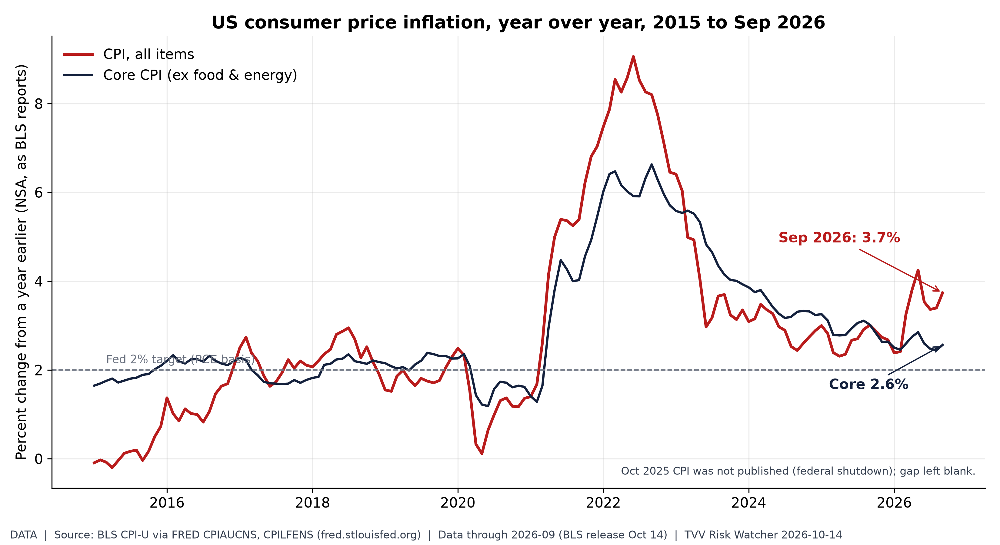 Headline CPI jumped to 3.7% in September while core sat at 2.6%: an energy-led shock pushing the Fed toward hikes. Source: FRED CPI-U series | 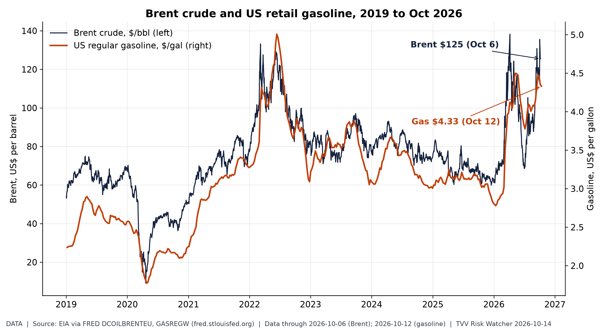 Brent is $125 after an April peak of $138, above 2022's high; US gasoline averages $4.33, driving September's CPI jump. Source: FRED Brent crude series |
07 BIO
● ★ Critical Water Shortage: Maharashtra ordered all urban and rural local bodies to cut water supply at least 10% from Oct 16 after a deficient monsoon. Economic Times Maharashtra cut · Hindustan Times Pune
● Critical Water Shortage: Pune will halt water supply every Thursday from Oct 15, with the Khadakwasla dam chain at 26.22 TMC on Oct 12, below normal. Hindustan Times Pune
● International Medical Corps' Oct 13 sitrep said Congo had 9,066 confirmed Bundibugyo Ebola cases and 4,381 confirmed deaths as of Oct 11, across seven provinces. IMC Ebola Sitrep 14
● IMC said Oct 13 its supported Congo sites had run over 1 million Ebola screenings and treated 2,806 patients, while Uganda has declared its outbreak over. IMC Ebola Sitrep 14
● Georgia's health department confirmed an unvaccinated Macon County measles case on Oct 13, raising its 2026 total to 22, linked to Pennsylvania's 1,100-plus outbreak. Georgia DPH release
● CDC measles count, hold since Oct 8: 4,080 confirmed US cases reported in 2026, 4,062 of them across 47 jurisdictions. CDC measles cases
● Bangladesh's health directorate reported nine more dengue deaths in 24 hours on Oct 13, lifting 2026 totals past 103,000 cases and 316 deaths. TBS News dengue · Xinhua dengue toll
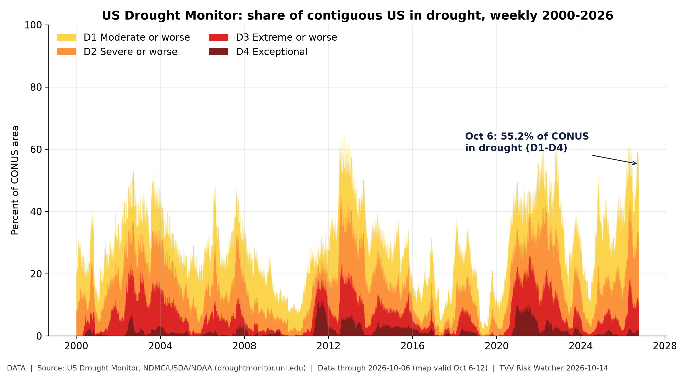
55% of the contiguous US is in drought, worse than 97% of weeks since 2000; the US mirror of Maharashtra's water cuts. Source: US Drought Monitor data
08 METALS
● ★ Kitco at 9:16 a.m. ET Oct 14: gold $4,083.40, silver $56.62, copper $6.6996/lb; bitcoin $82,399, ether $2,465.72 and XRP $1.35. Kitco live prices
● Kitco showed silver down 4.12% and gold down 1.84% by 9:16 a.m. ET Oct 14 as the hotter September CPI revived Fed rate-hike pressure. Kitco live prices
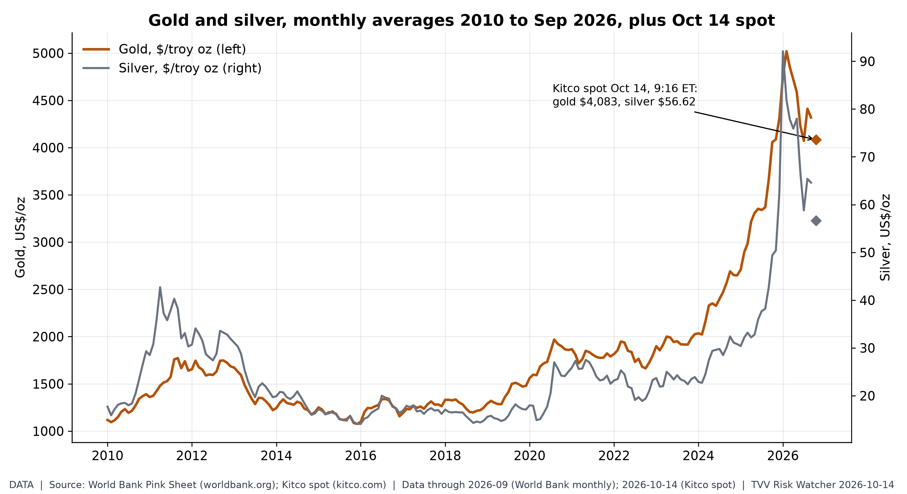
Gold averaged $4,319 in September, about 3x 2019 but off its $5,020 Feb 2026 peak; CPI shock took spot to $4,083 Oct 14. Source: World Bank commodity prices
09 TAPE
● ★ Gainers: JBDI (JBDI) +245.0%; TCRT (TCRT) +187.1%; Fly-E (FLYE) +79.5%; Losers: WFF (WFF) -87.3%; Linkers (LNKS) -54.2%; Mobile-Health (MNDR) -53.6%; Oct 13 StockSetups Oct 13 movers
● ★ Gainers: PFAI (PFAI) +77.8%; BIO-key (BKYI) +71.5%; JYD (JYD) +58.1%; Losers: Hennessy VII (HVII) -50.9%; J-Star (YMAT) -38.8%; CIFG (CIFG) -26.1%; Oct 13 StockSetups Oct 13 movers
● ★ Gainers: CDW (CDW) +5.7%; Valero (VLO) +4.7%; Charter (CHTR) +4.4%; Losers: Applied Materials (AMAT) -6.7%; Johnson & Johnson (JNJ) -5.7%; Citigroup (C) -5.6%; S&P Oct 13 Quant500 S&P movers · Wall Street Wrap Oct 13
● ★ Gainers: Oracle (ORCL) +4.2%; Expand Energy (EXE) +4.0%; Phillips 66 (PSX) +4.0%; Losers: Flex (FLEX) -5.4%; Domino's (DPZ) -4.8%; KKR (KKR) -4.8%; S&P Oct 13 Quant500 S&P movers
● ★ Gainers: Marathon Petroleum (MPC) +4.0%; First Solar (FSLR) +3.8%; IFF (IFF) +3.8%; Losers: Vertex (VRTX) -4.3%; Blackstone (BX) -4.2%; Cadence (CDNS) -4.1%; S&P Oct 13 Quant500 S&P movers
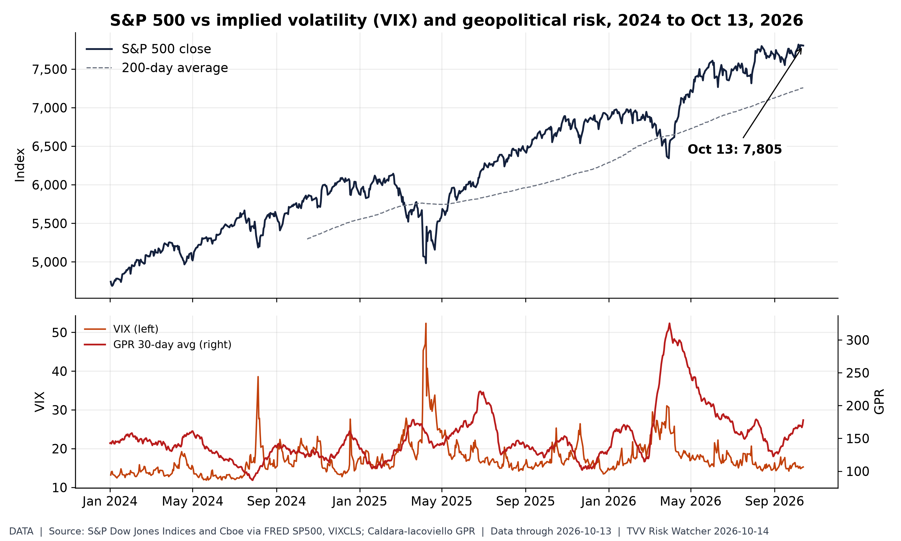
The S&P 500 sits near 7,805 with VIX at 15.3 while the GPR 30-day average stays elevated: a complacency gap. Source: FRED S&P 500 series
10 PREDIX
● ★ Ukraine ceasefire: Polymarket priced a Russia-Ukraine ceasefire deal by Dec 31 at 16.5% on Oct 14, with 8.5% by Nov 30 and 4% by Oct 31. Polymarket Ukraine ceasefire
● ★ Hormuz: Polymarket gave 13.5% odds on Oct 14 that Strait of Hormuz traffic returns to normal by Dec 31. Polymarket Hormuz normal
● FOMC: CME FedWatch put an Oct 28 hold at 78% on Oct 14, but Kalshi's hold contract fell to 50 cents from 82 after CPI, hike at 49. Kalshi Oct Fed decision · FedWatch mirror Oct 14
● ★ US-Iran: Polymarket priced the US-Iran ceasefire continuing through the Nov 3 midterms at 77.5% on Oct 14. Polymarket US-Iran ceasefire
● ★ December FOMC: CME futures-implied path on Oct 14 put a 25bp hike by Dec 9 near 70.9%, a 50bp move at 19.2% and a hold at 9.9%. FedWatch mirror Oct 14
● Pump prices: Kalshi priced October's AAA national average finishing above $4.30 at 55% on Oct 14, above $4.40 at 25% and above $4.50 at 17%. Kalshi AAA October market
● Midterms House: Democrats traded at 90.5% to win the House on Polymarket on Oct 14, with Election Day Nov 3. Polymarket House 2026
● Midterms Senate: Democrats traded at 63.5% to control the Senate on Polymarket as of Oct 14, Republicans at 37.5%. Polymarket Senate 2026
● Yemen: a Saudi-Houthi ceasefire announced by Dec 31 traded at 29.5% on Polymarket Oct 14; the Oct 31 contract held 6.5%. Polymarket Saudi-Houthi ceasefire
● Hormuz peak: Kalshi's week-to-Oct 18 market showed 93% odds of peak daily traffic above 3, 63% above 5 and 7% above 8 on Oct 14. Kalshi Hormuz peak traffic
● AGI: Kalshi priced any-company AGI before Jan 1, 2027 at 12% on Oct 14, versus 42% before Oct 1, 2027 and 56% before 2028. Kalshi AGI by date
● OpenAI AGI: Polymarket priced an OpenAI AGI announcement before 2027 at 13.5% on Oct 14. Polymarket OpenAI AGI
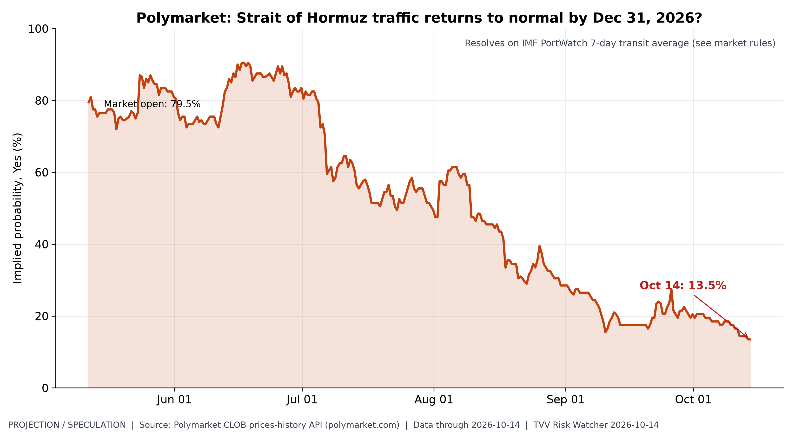 Traders cut odds of normal Hormuz traffic by Dec 31 from 80% in May to 13.5%, pricing a prolonged closure. Source: Polymarket Hormuz traffic market | 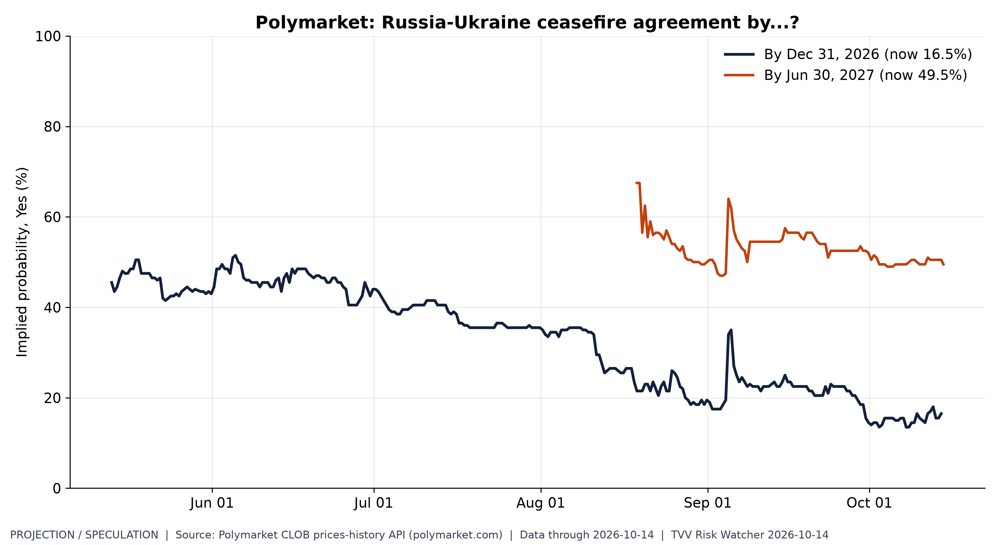 Odds of a 2026 Russia-Ukraine ceasefire fell from 46% in May to 16.5%; even mid-2027 is a coin flip. Source: Polymarket Russia-Ukraine ceasefire market |
11 TECH
● ★ Cybercab authorized: the Texas DMV registry mirrored by fsddb on Oct 14 lists 319 Cybercabs among 739 Tesla Robotaxi vehicles, up 150 this week. fsddb TxDMV mirror
● Cybercab in service: fsddb's receipt tracker showed 227 unique Tesla plates and 354 logged rides by Oct 14, averaging $8.94, with only eight plates active in 30 days. fsddb plate tracker
● Cybercab production ramp: fsddb's TxDMV mirror shows no new Cybercab VINs since Oct 8 batch registrations; Tesla has published no factory output total as of Oct 14. fsddb TxDMV mirror
● ★ SI-AGI Danger / Arrival Index: AGI-before-2027 odds on Oct 14 stood at 12% on Kalshi any-company and 13.5% for OpenAI on Polymarket. Kalshi AGI by date · Polymarket OpenAI AGI
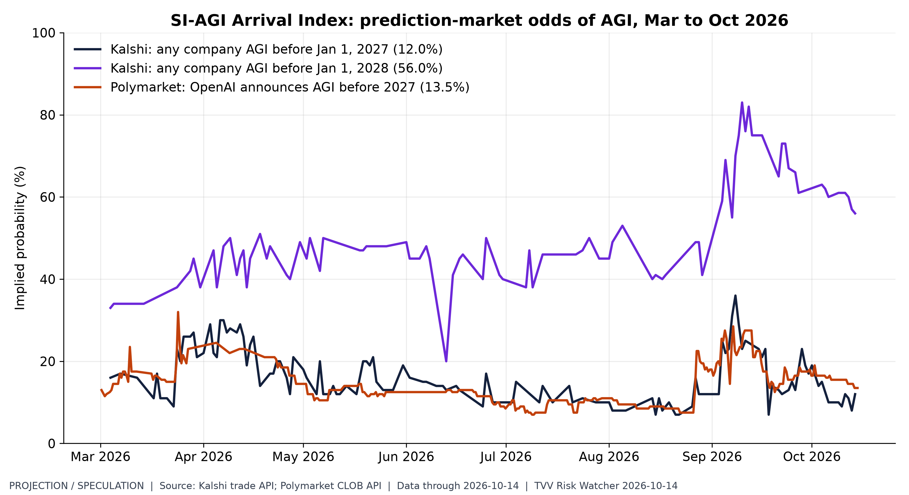
Markets price AGI before 2027 at 12-13.5% but before 2028 near 56%: a fast-closing window for AI governance risk. Source: Kalshi AGI before date market
TECHVESTVENTURES ACTION-ALERT — October 14, 2026
EDITOR — Michael Hentschel
Most news events require or spawn no action or reaction, some (but not many) are or become warnings. We draw attention to substantial lifestyle risks and market risks in particular, some created by Mid-Term Vote anxieties, Middle East tensions, vast over-indebtedness globally, and other events we track. Longer term but capable of causing sudden power surges as serious as the Carrington Event. Climate instability occasioned by long-term cyclical solar electro-magnetic flares, is becoming much more prominent and even more likely. New AI predictive analytics and pattern seekers are pointed in some of these directions, and we monitor imminent likelihood. Some readers might hedge and others might see opportunity. The above is not investment advice.
Graph Sources
• www.matteoiacoviello.com data page
• www.matteoiacoviello.com data page
• earthquake.usgs.gov data page
• fred.stlouisfed.org data page
• fred.stlouisfed.org data page
• droughtmonitor.unl.edu data page